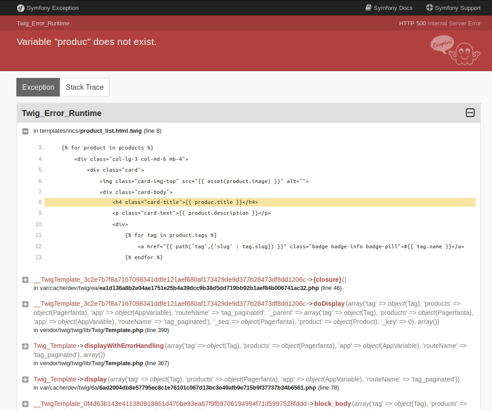

Debugging is the process of finding and resolving defects
or problems within a computer program that prevent correct operation of computer software or a system.
Le débogage est donc l'art de dénicher et d'éliminer les bugs, qu'ils soient physiques ou logiciels.
Un savoir difficile à transmettre
Innatendu
Contextuel
Résolvable de plusieurs façons
Efficacité qui dépend beaucoup de l'expérience
Néanmoins
Quelques démarches souvent gagnantes
Plusieurs outils très utiles
Conseils et trucs
Qu'est-ce qu'un bug ?
Provient à l'origine de la présence (très occasionnelle) de coléoptères dans les relais des premiers ordinateurs
Un bug :
Provoque un dysfonctionnement
Est inattendu
Bug immédiat
A déjà été vu
Simple à résoudre
Oubli ou étourderie
Bref, ne pose pas problème
Bug...pas immédiat
Avait l'air immédiat maiiiiis...
Est difficile à reproduire
N'est pas encore compris
Cause lointaine et mystérieuse #alien
Etc.
Les démarches gagnantes
Reproduire l'erreur
La base... ou pas
Parfois plus difficile que de résoudre le bug lui-même
Importance de la reproduction du contexte complet
Lire le message d'erreur
Première prise d'information
Souvent en anglais : sortez armés mais confiants
Lire le plus intégralement possible (Message, numéro de ligne, pile d'exécution)
Réflexion
Nécessité d'adopter un plan : utilisez ce que vous avez entre les oreilles !
Souvent zappé par les développeurs (tiens-donc)
Demande un peu de temps...
Mais en fait surtout beaucoup gagner
Faire des pauses, s'aérer, en discutez avec des collègues #Zenattitude.
Collecte d'information
Pas forcément la première étape du processus de résolution
Choisir le bon outil
Faire des tests
≠ tests unitaires ou fonctionnels
Découle de la réflexion
Consiste à créer des scénarii en modifiant les variables d'entrée, de contexte ou même en modifiant un peu le code source
Puisdéduction
Rollback, remplacement, différentiel
Remplacement du code défectueux par un autre code (éventuellement antérieur) que l'on sait fonctionnel
Établissement d'un différentiel (comparaison ligne par ligne)
Varier les approches
Changer de méthode si l'acutelle d'elle prend trop de temps
Ne pas être trop systématique
Votre cerveau gagne à être mobilisé
Les outils
Mode développement
Stack Trace
Exceptions (toutes!)
Possibilité de lire le code source directement dans le navigateur
Message d'erreur souvent indicatif
Exemple

Dump and die
Basique mais souvent suffisant !
Ne pas hésiter à sortir l'artillerie lourde (cf Xdebug) quand nécessaire